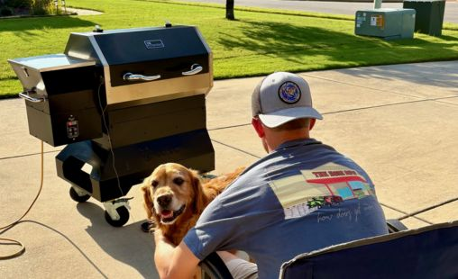

House Made Beef Jerky
This simple jerky recipe raises the bar

Method
Pellet grill
Ingredients
Beef eye of round roast + marinade
- 1/4 cup soy sauce
- 1/4 cup Worcestershire sauce
- 2 tablespoons brown sugar
- 2 tablespoons Big Cove BBQ Seasoning
- 1 teaspoon red pepper flakes
Steps
Slice beef eye of round roast into 1/4 inch slices
Cover with marinade and let sit in fridge overnight
When ready to cook, preheat smoker to 200 degrees F
Place slices on wire rack for easy transport
Smoke 4 to 5 hours until desired level of doneness
Enjoy and be sure to share!
Keeps up to 1 week when refrigerated in airtight container
Inspired by Jennifer Segal's Best Homemade Beef Jerky recipe